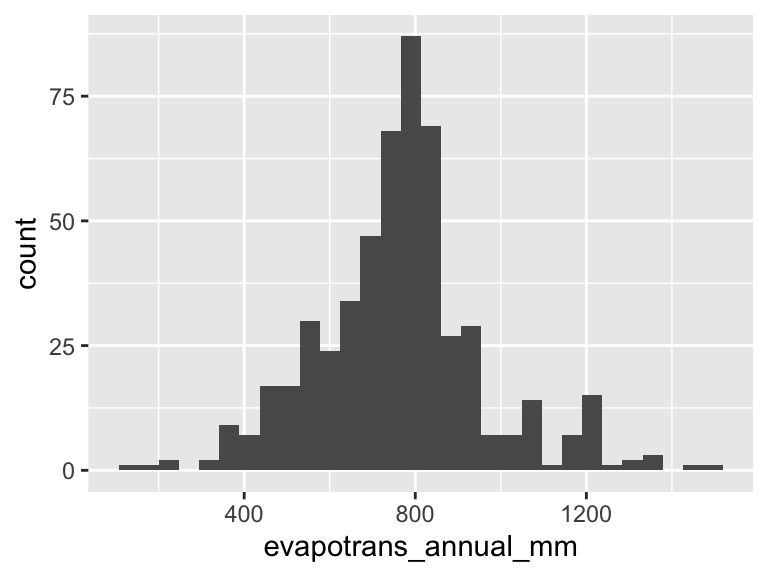
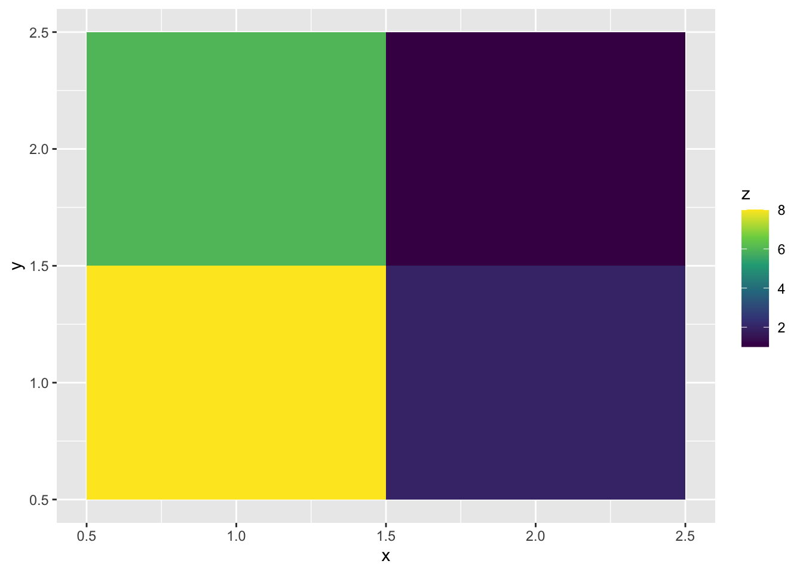

clim <- read.csv("https://raw.githubusercontent.com/uhm-biostats/stat-mod/refs/heads/main/data/plot_climate.csv")12 Estimating the parameters of a normal distribution
This lab will introduce you to another log likelihood function, that of a normal distribution. For data we will investigate annual evapotranspiration (ET). ET is the process of water transferring from plants, soil, and surface water into the atmosphere and plays a central role in governing (or at least predicting) ecosystem productivity (Idol et al. 2007; Brauman et al. 2012) and biodiversity (Fisher et al. 2011).
You can download the lab template .qmd file for this lab here:
The template will prompt you to work through the following sections.
12.1 Central tendency and variability of annual evapotranspiration
What is the mean annual evapotranspiration across the plots in the OpenNahele data and just how variable is ET? Let’s read in the climate data and find out.
To find out the average we can simply use the mean function:
mean(clim$evapotrans_annual_mm)[1] 764.6954For variability, standard deviation is a common measure:
sd(clim$evapotrans_annual_mm)[1] 194.9598But, as we seem to like to do, let’s try to take the hard way to getting those answers. Let’s use the method of maximum likelihood to find the mean and standard deviation. First have a look at the shape of the distribution of the data:
ggplot(clim, aes(evapotrans_annual_mm)) +
geom_histogram()`stat_bin()` using `bins = 30`. Pick better value `binwidth`.
Looks a lot like a bell-shaped curve—like a normal distribution. Thinking about annual ET, this makes sense too: day to day there are a lot of little processes that add up to produce ET, and on top of that annual ET literally adds up the ET of each day. So the Central Limit Theorem likely applies, and we shouldn’t be too surprised to find that annual ET looks to follow a normal distribution.
12.2 The log likelihood function for a normal distribution
As discussed in the introductory likelihood lecture notes the log likelihood function for data that come from a continuous probability distribution uses the same approach of summing log “probabilities” but now we are actually summing log probability densities
\[ \log\mathscr{L}(\text{parameters, data}) = \sum\log PDF(\text{data} \mid \text{parameters}) \]
So our log likelihood function for the annual ET data will involve summing up the output of dnorm(..., log = TRUE). One aspect that will be new and different from the log likelihood function based in the binomial distribution lab is that we need to estimate two parameters for the normal distribution: mean \(\hat{\mu}\) and standard deviation \(\hat{\sigma}\).
You can delete this list once complete, or perhaps make some bullets into subheaders, up to you!
Your tasks are to
- write an R function to calculate the log likelihood function, it should be able to take arguments for the mean and sd (remember, these parameters need to be passed as together in a single vector) and the data
- visualize the log likelihood surface (see below, this will require some new skills)
- use
optimto find the maximum likelihood estimates for \(\hat{\mu}\) and \(\hat{\sigma}\) - compare the estimates \(\hat{\mu}\) and \(\hat{\sigma}\) to the values we calculated with
meanandsd
12.3 Visualizing a surface
Part of our task is to visualize a surface. There are multiple ways to do that, but we use geom_tile. Check out how that works
# make some simple data
surf <- data.frame(x = c(1, 2, 1, 2),
y = c(1, 1, 2, 2),
z = c(8, 2, 6, 1))
# visualize the `z` axis as a third dimension coded by color
ggplot(surf, aes(x, y, fill = z)) +
geom_tile() +
scale_fill_viridis_c()
Look at the data underlying that graph
surf x y z
1 1 1 8
2 2 1 2
3 1 2 6
4 2 2 1The x and y columns lay out a grid while the z column provides the “heights” of the surface at each one of those gridpoints. The geom_tile geom just fills the space with squares colored according to the values of z.
You can use this for your visualization!
But you will not want to make the xy grid by hand. To make a grid over a range of parameter (\(\mu\) and \(\sigma\) values) use the expand.grid function, for example
params <- expand.grid(mu = seq(650, 850, length.out = 20),
sig = seq(100, 200, length.out = 20))
head(params) mu sig
1 650.0000 100
2 660.5263 100
3 671.0526 100
4 681.5789 100
5 692.1053 100
6 702.6316 100Now we have a grid of values in the neighborhood of the results we got from mean(clim$evapotrans_annual_mm) and sd(clim$evapotrans_annual_mm). In each column of the output of expand.grid there will be 20 unique values because in our call to seq we specified length.out = 20. You could make that larger or smaller—larger if you feel like you don’t have enough tiles for a pretty figure, smaller if (hypothetically) its too big of a computational task for your computer. Our task in this lab is nothing to worry about computationally.
The next thing you need to figure out is how to apply your likelihood function to each parameter combination in each of the rows of params. Unfortunately you cannot just plug the columns into your log likelihood function. The reason is that you are (hopefully) passing the entire column of ET data into dnorm somewhere in your function. If you also pass in column vectors for the mean and sd arguments of dnorm it will get confused about what you’re asking for.
That means we need to plug in the values for mean and sd one combination at a time. The way to do that based on what we’ve learned so far is a for loop! If you are curious about other ways you’ll want to dig deep into functions like lapply and vapply from base R or rowwise for a dplyr-flavored approach.
To the for loop! Here is how it will work:
# this is a pretend version of a likelihood function
your_lik_fun <- function(pars, data) {
pars[1] + pars[2] + sum(data)
}
# pretend data
your_data <- 1:4
# make an empty vector that will hold the log likelihood values
ll_norm <- numeric(nrow(params))
for(i in 1:nrow(params)) {
pars_i <- c(params$mu[i], params$sig[i])
ll_norm[i] <- your_lik_fun(pars_i, your_data)
}
# combine params and ll_norm for plotting
parms_ll <- data.frame(params, loglik = ll_norm)
head(parms_ll) mu sig loglik
1 650.0000 100 760.0000
2 660.5263 100 770.5263
3 671.0526 100 781.0526
4 681.5789 100 791.5789
5 692.1053 100 802.1053
6 702.6316 100 812.6316This same approach will work for calculating the real log likelihood surface.
12.4 References
Brauman KA, Freyberg DL, Daily GC. 2012. Potential evapotranspiration from forest and pasture in the tropics: A case study in kona, hawai ‘i. Journal of Hydrology 440:52–61. Elsevier.
Fisher JB, Whittaker RJ, Malhi Y. 2011. ET come home: Potential evapotranspiration in geographical ecology. Global Ecology and Biogeography 20:1–18. Wiley Online Library.
Idol T, Baker PJ, Meason D. 2007. Indicators of forest ecosystem productivity and nutrient status across precipitation and temperature gradients in hawaii. Journal of Tropical Ecology 23:693–704. Cambridge University Press.